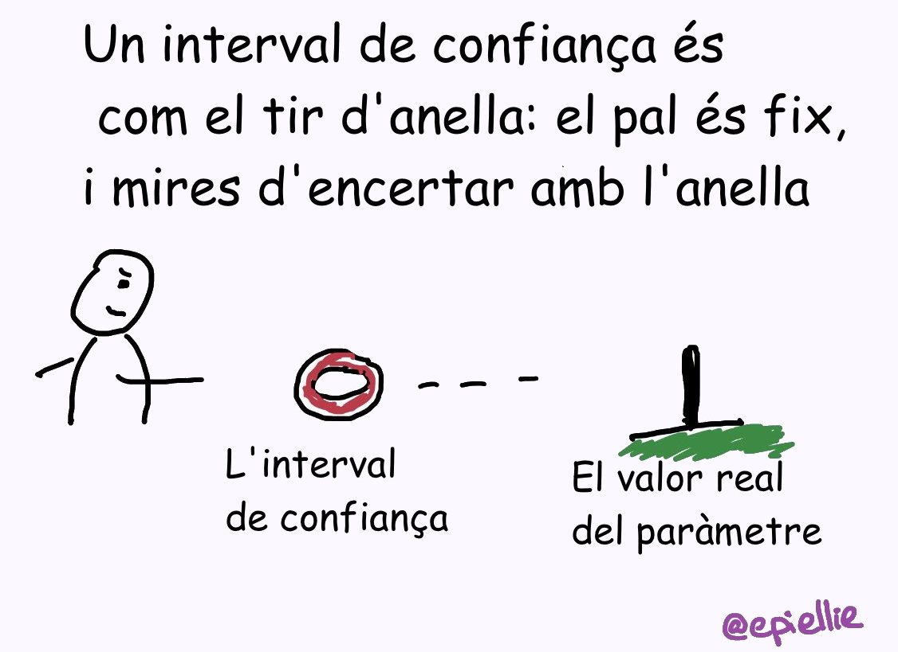
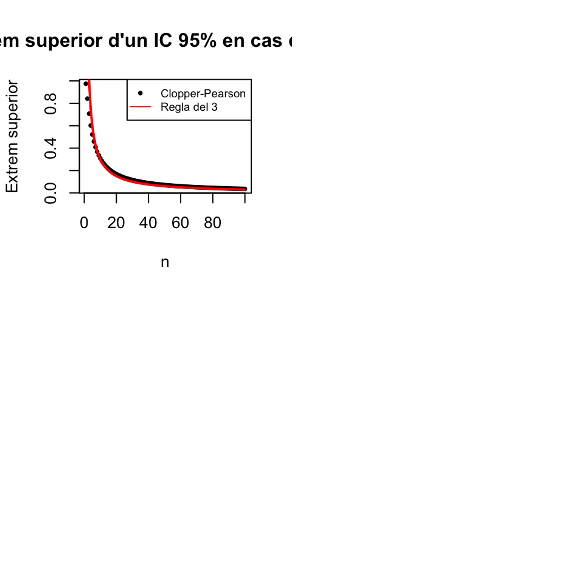
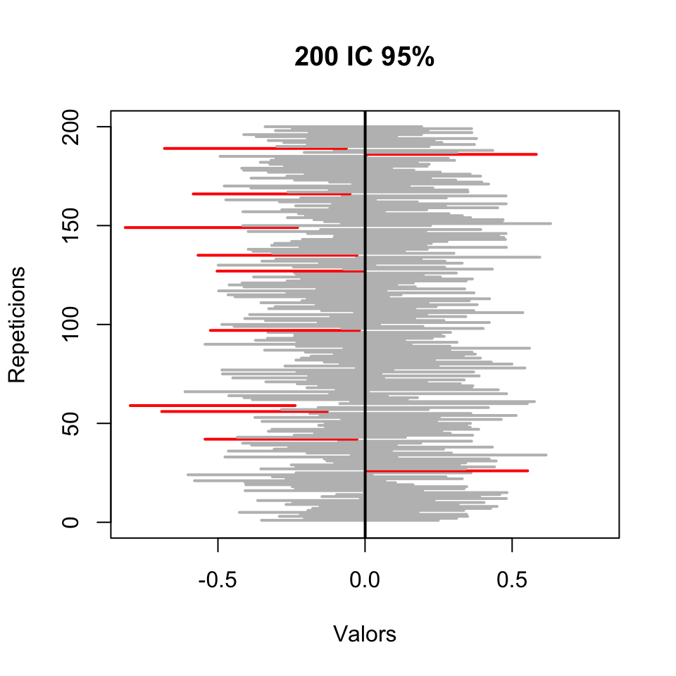
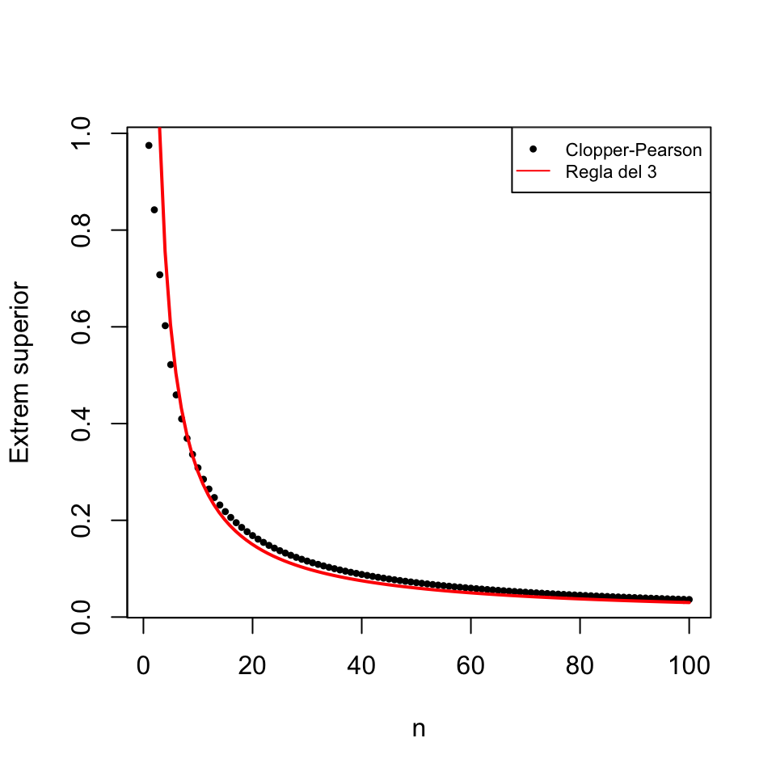
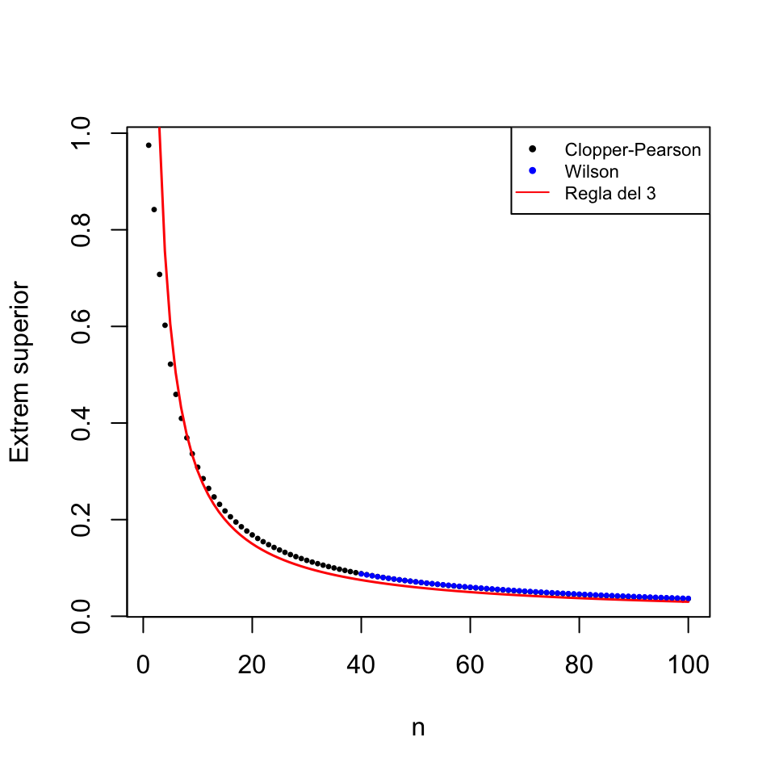

Tema 4 Intervals de confiança
Amb l’estimació puntual intentam endevinar el valor d’un paràmetre d’una variable poblacional. Però, és clar, és molt difícil que amb una mostra poguem encertar exactament el valor del paràmetre. Les tècniques de l’estadística inferencial ens permeten aleshores quantificar la precisió d’aquesta estimació. Això es fa complementant l’estimació puntual amb un interval al voltant d’aquesta estimació “on estam molt segurs que cau el valor real del paràmetre”.

Figura 4.1: elEconomista.es, 27/5/2019
Naturalment, no fa falta saber estadística per donar un interval que estiguem molt segurs que conté el valor real del paràmetre. Basta donar un interval prou ample com per contenir tots els valors raonables del paràmetre.

Del que es tracta és de donar un interval el més estret possible que estiguem molt segurs que conté el valor real del paràmetre. Aleshores, l’amplada d’aquest interval dependrà:
De la variabilitat de l’estimador: com ja hem comentat a la lliçó anterior, com menys variabilitat tingui, més precisa serà l’estimació. Normalment, la variabilitat de l’estimador creix amb la desviació típica de la variable poblacional i decreix amb la mida de les mostres.
Del nivell de confiança, o seguretat, de l’estimació: com de segurs volem estar que el valor real del paràmetre cau dins l’interval que donem. Com més segurs volguem estar, segurament més ample haurà de ser l’interval.
4.1 Definició d’interval de confiança
Un interval de confiança del Q% (abreujadament, un IC Q%) d’un paràmetre poblacional és un interval obtingut aplicant a una mostra aleatòria simple de mida \(n\) una fórmula que satisfà la propietat següent:
És a dir:
Un Q% dels IC Q% contenen el valor real del paràmetre poblacional
en el sentit que:
Un Q% de les mostres aleatòries simples donen lloc a un IC Q% que conté el valor real del paràmetre poblacional.
Tenir una confiança del Q% significa doncs que hem calculat l’interval amb una fórmula que encerta el Q% de les vegades, en el sentit que en Q de cada 100 vegades que aplicàssim aquesta fórmula a mostres aleatòries simples, els intervals que obtendríem contendrien el valor real del paràmetre que volem estimar. Però aleshores aquesta fórmula s’equivoca el (100-Q)% de les vegades, és a dir, 100-Q de cada 100 intervals obtinguts aplicant aquesta fórmula a mostres aleatòries simples no contenen el valor real del paràmetre que volem estimar. I no sabem quin és el nostre cas. Nosaltres només podem confiar que hagi encertat amb la nostra mostra.
Exemple 4.1 En un experiment hem mesurat el percentatge d’augment d’alcohol en sang a 40 persones després de prendre 4 canyes de cervesa. La mitjana i la desviació típica mostral d’aquests percentatges d’increment han estat \(\overline{X}=41.2\) i \(\widetilde{S}_X=2.1\). Com veurem a l’Exemple 4.4, un IC 95% per al percentatge d’augment mitjà d’alcohol en sang d’una persona després de beure 4 canyes de cervesa és [40.53, 41.87].
Això significa que estam “molt segurs” que l’augment mitjà d’alcohol en sang d’una persona després de beure 4 canyes de cervesa està entre el 40.53% i el 41.87%, perquè aquest interval l’haurem calculat amb una fórmula que el 95% de les vegades que l’aplicàssim a una mostra aleatòria simple de mida 40 donaria un interval que conté la mitjana poblacional que volem estimar. Nosaltres som optimistes i “confiam” que el nostre interval pertany a aquest 95% d’intervals que l’encerten.
Sovint això ho trobareu expressat com :
Hi ha un 95% de probabilitat que l’interval [40.53, 41.87] contengui el valor real de l’augment mitjà d’alcohol en sang d’una persona després de beure 4 canyes de cervesa.
Però cal entendre el que diu aquesta frase:
Per definició, un 95% dels intervals de confiança del 95% per a l’augment mitjà d’alcohol etc. contenen el valor real d’aquest augment mitjà.
[40.53, 41.87] és un interval de confiança del 95% per a l’augment mitjà d’alcohol etc.
Aleshores, [40.53, 41.87] té una probabilitat del 95% de contenir el valor real de l’augment mitjà d’alcohol etc. en el mateix sentit que si un 95% de les persones tenen una determinada característica, i prenc una persona a l’atzar, aquesta persona té un 95% de probabilitat de tenir aquesta característica.
No confongueu:
Interval de referència del Q% per a una variable aleatòria: Interval que conté el valor de la variable aleatòria en un individu amb probabilitat Q%.
Interval de confiança del Q% per a un paràmetre: Interval que conté el valor poblacional del paràmetre de la variable aleatòria “amb probabilitat” Q%, en el sentit que l’hem calculat amb una fórmula que dóna un interval que conté el paràmetre el Q% de les vegades que l’aplicam a una mostra aleatòria simple.
Interval de referència del Q% per a un estimador: Interval que conté el valor de l’estimador sobre una mostra amb probabilitat Q%.
Per exemple:
Si diem que un interval de referència del 95% per a la concentració d’una proteïna en sèrum en individus sans mesurada en mg/dl és [0.5,1.1], això significa que
- un 95% dels individus sans tenen una concentració d’aquesta proteïna en sèrum d’entre 0.5 i 1.1 mg/dl,
és a dir, que
- un individu sa escollit a l’atzar té un 95% de probabilitat que la seva concentració d’aquesta proteïna en sèrum estigui entre 0.5 i 1.1 mg/dl.
Si diem que un interval de confiança del 95% per a la concentració mitjana d’una proteïna en sèrum en individus sans mesurada en g/dl és [0.5,1.1], això significa que hem pres una mostra aleatòria simple de concentracions d’aquesta proteïna en sèrum en individus sans i a partir d’aquesta mostra:
- Hem estimat que la concentració mitjana d’aquesta proteïna en sèrum en individus sans està entre 0.5 i 1.1 mg/dl.
- I tenim un “95% de confiança” en aquest interval perquè el 95% dels intervals que s’obtenen en aplicar aquesta fórmula a mostres aleatòries simples de la mateixa mida que la nostra contenen la mitjana poblacional.
Si diem que el 95% de les mostres de 100 concentracions d’una determinada proteïna en sèrum en individus sans tenen la mitjana mostral entre 0.5 i 1.1 mg/dl, això és un interval de referència del 95% per a la mitjana mostral de mostres de mida 100, no un interval de confiança per a la concentració mitjana poblacional ni un interval de referència per al valor de la concentració en un individu.
Sovint calculareu un interval de confiança del Q% per a un cert paràmetre \(\theta\) d’una població, us donarà \([a,b]\), i amb el poc rigor amb què us soleu expressar, us serà igual dir que
“el valor real de \(\theta\) té una probabilitat del Q% de pertànyer a \([a,b]\)”
com que
“\([a,b]\) té una probabilitat del Q% de contenir el valor real de \(\theta\)”
Però aquestes dues frases no diuen exactament el mateix. I de fet, la primera és falsa i la segona la interpretam com a vertadera. Fixau-vos que a la primera frase parlam de la probabilitat que a \(\theta\) li passi qualque cosa, i a la segona que sigui a \([a,b]\) a qui li passi qualque cosa.
La primera frase diu que \(\theta\) varia i un Q% dels seus valors pertanyen a \([a,b]\). Això és fals. “El valor real de \(\theta\)” és un número que no varia. Per a la nostra població val una cosa concreta, desconeguda però concreta, que pertany o no a l’interval \([a,b]\).
La segona frase en canvi es pot interpretar de la manera següent. L’interval \([a,b]\) forma part de tota la “població d’intervals de confiança del Q% per a \(\theta\)” calculats a partir de mostres aleatòries simples d’una mida concreta de la nostra població. Un Q% d’aquests intervals conté el valor real de \(\theta\). Per tant, podem dir que el nostre interval \([a,b]\) té una probabilitat del Q% de contenir el valor real de \(\theta\). Aquesta interpretació és correcta.

Que un IC Q% per a un paràmetre \(\theta\) sigui \([a,b]\) serveix:
Per estimar \(\theta\) amb aquest marge de confiança: Estam bastant segurs que el valor poblacional de \(\theta\) està entre \(a\) i \(b\).
Per poder comparar el valor poblacional de \(\theta\) amb un valor concret amb aquest marge de confiança: Estam bastant segurs que el valor real de \(\theta\) no està ni per sota de \(a\) ni per sobre de \(b\) i per tant que és diferent de tots aquests valors.
Estam molt (“un 95%”) segurs que \(p\in [0.025,0.047]\) (perquè un 95% dels intervals calculats amb la fórmula que hem emprat contendrien \(p\))
Estam molt segurs que \(p>0.02\) (perquè tot l’interval on estam molt segurs que cau el valor real de \(p\) està a la dreta de 0.02)
Estam molt segurs que \(p\neq 0.05\) (perquè 0.05 no pertany a l’interval on estam molt segurs que sí que cau el valor real de \(p\))
Però no estam molt segurs que \(p=0.03\), per molt que \(0.03\in [0.025,0.047]\): estam molt segurs que \(p\) està entre 0.025 i 0.047, però no tenim cap seguretat que valgui un valor concret entre aquests límits, només que està entre aquests límits. En tot cas, com que 0.03 pertany a l’interval on creiem que cau el valor real de \(p\), podem dir que, amb un nivell de confiança del 95%, \(p\) podria ser 0.03. O també que, amb un nivell de confiança del 95%, no podem rebutjar que \(p\) sigui 0.03.
Hi ha dos tipus de mètodes bàsics de càlcul d’intervals de confiança a partir de mostres aleatòries:
Paramètrics: Usant alguna fórmula basada en la distribució mostral de l’estimador. Es basen en teoremes i només serveixen si la variable aleatòria \(X\) i la mostra aleatòria satisfan (aproximadament) les hipòtesis del teorema.
No paramètrics: Tots els altres. El nostre preferit és el bootstrap:
- Es prenen a l’atzar moltes mostres aleatòries amb reposició de la mostra, totes de la mateixa mida que la mostra.
- Es calcula l’estimador amb cada una d’aquestes mostres.
- S’usa el vector de resultats per estimar un interval de confiança. Per exemple, podem prendre com a IC 95% l’interval amb extrems els quantils 0.025 i 0.975 d’aquest vector.
El bootstrap es pot usar sempre i funciona bé si la mostra és aleatòria, però es basa en un procés aleatori i per tant cada execució sobre una mateixa mostra pot donar un interval diferent.

Figura 4.2: En anglès, la bootstrap és la cingla de la bota, i el mètode del bootstrap refereix a la frase feta anglesa “elevar-se estirant-se de les cingles”
4.2 Exemple: Interval de confiança del 95% per a la mitjana d’una variable aleatòria normal
Una de les fórmules més conegudes per a intervals de confiança és la següent:
Vegem d’on surt aquesta fórmula, ja que és un paradigma de com s’obtenen la majoria de les fórmules paramètriques per a intervals de confiança.
Suposem doncs que \(X\) és una variable aleatòria normal de mitjana \(\mu\) i que en tenim una mostra aleatòria simple de mida \(n\), mitjana mostral \(\overline{X}\) i desviació típica mostral \(\widetilde{S}_X\). En aquesta situació, sabem que \[ T=\frac{\overline{X}-\mu}{\widetilde{S}_{X}/\sqrt{n}} \] té distribució t de Student amb \(n-1\) graus de llibertat, \(t_{n-1}\).
Ara recordem que si indicam amb \(t_{n-1,0.975}\) el 0.975-quantil d’una \(t_{n-1}\), per definició tenim que \[ P(T\leqslant t_{n-1,0.975})=0.975 \] i per la simetria de la \(t\), \[ P(T\leqslant -t_{n-1,0.975})=P(T\geqslant t_{n-1,0.975})=0.025 \] Per tant: \[ \begin{array}{l} P(-t_{n-1,0.975}\leqslant T\leqslant t_{n-1,0.975})\\ \quad =P(T\leqslant t_{n-1,0.975})-P(T\leqslant -t_{n-1,0.975})\\ \quad =0.975-0.025=0.95 \end{array} \]

Això diu que un 95% de les mostres aleatòries simples de mida \(n\) tenen el seu valor de \[ T=\frac{\overline{X}-\mu}{\widetilde{S}_{X}/\sqrt{n}} \] dins l’interval \([-t_{n-1,0.975}, t_{n-1,0.975}]\). Desenvolupem això: \[ \begin{array}{rl} 0.95 &\!\!\!\! =P\Bigg(-t_{n-1,0.975}\leqslant \dfrac{\overline{X}-\mu}{\widetilde{S}_{X}/\sqrt{n}}\leqslant t_{n-1,0.975}\Bigg)\\[2ex] &\!\!\!\! =P\Bigg(-t_{n-1,0.975}\cdot \dfrac{\widetilde{S}_X}{\sqrt{n}}\leqslant \overline{X}-\mu \leqslant t_{n-1,0.975}\cdot \dfrac{\widetilde{S}_X}{\sqrt{n}}\Bigg)\\[2ex] &\!\!\!\! =P\Bigg(-\overline{X}-t_{n-1,0.975}\cdot \dfrac{\widetilde{S}_X}{\sqrt{n}}\leqslant -\mu \leqslant -\overline{X}+t_{n-1,0.975}\cdot \dfrac{\widetilde{S}_X}{\sqrt{n}}\Bigg)\\[2ex] &\!\!\!\! =P\Bigg(\overline{X}-t_{n-1,0.975}\cdot \dfrac{\widetilde{S}_X}{\sqrt{n}}\leqslant \mu \leqslant \overline{X}+t_{n-1,0.975}\cdot \dfrac{\widetilde{S}_X}{\sqrt{n}}\Bigg) \end{array} \]
I per tant per al 95% de les mostres aleatòries simples de mida \(n\), la \(\mu\) cau dins l’interval \[ \Bigg[\overline{X}-t_{n-1,0.975}\cdot \frac{\widetilde{S}_X}{\sqrt{n}},\ \overline{X}+t_{n-1,0.975}\cdot \frac{\widetilde{S}_X}{\sqrt{n}}\Bigg] \] Per tant, això és un IC 95% per a \(\mu\).
Sovint l’escriurem \[ \overline{X}\pm t_{n-1,0.975}\cdot \frac{\widetilde{S}_X}{\sqrt{n}} \] per emfatitzar que estimam que \(\mu\) val \(\overline{X}\) més o menys el marge d’error \(t_{n-1,0.975}\cdot \widetilde{S}_X/\sqrt{n}\).
Exemple 4.3 Fem un experiment per veure que, efectivament, aquesta fórmula “encerta”, en el sentit que conté la \(\mu\), al voltant del 95% de les vegades. Al bloc de codi següent, hi generam una Població de 107 “individus” que segueixen una llei normal estàndard i en calculam la mitjana mu. A continuació, definim una funció IC que calcula l’IC 95% per a la mitjana \(\mu\) amb la fórmula anterior. Llavors, prenem 200 mostres aleatòries simples de mida 50 de la nostra població i les aplicam aquesta funció, obtenint una matriu M de 200 columnes formades pels dos extrems dels intervals (l’inferior a la primera filera i el superior a la segona filera). Finalment, comptam quantes vegades hem encertat, és a dir, a quantes columnes de M la mitjana poblacional mu està entre l’entrada de la primera filera i la de la segona.
set.seed(42)
Poblacio=rnorm(10^7)
mu=mean(Poblacio)
IC=function(x){
n=length(x)
mean(x)+qt(0.975,n-1)*sd(x)/sqrt(n)*c(-1,1)}
M=replicate(200,IC(sample(Poblacio,50,replace=TRUE)))
Encerts=length(which(mu>=M[1,] & mu<=M[2,]))
Encerts## [1] 189Hem encertat 189 vegades, és a dir, un 94.5% de les vegades. És aproximadament el que esperàvem. Si ho provau amb altres llavors d’aleatorietat obtendreu altres resultats, de vegades millors, de vegades pitjors.
Per veure millor els encerts, dibuixam els intervals en un gràfic, on apareixeran en gris els que contenen la mu i en vermell els que no.
plot(1,type="n",xlim=c(-0.8,0.8),ylim=c(0,200),
xlab="Valors",ylab="Repeticions", main="200 IC 95%")
seg.int=function(i){color="grey";
if((mu<M[1,i]) | (mu>M[2,i])){color="red"}
segments(M[1,i],i,M[2,i],i,col=color,lwd=2)}
sapply(1:200,FUN=seg.int)
abline(v=mu,lwd=2)
Per exemple, de mitjana, un 5% de les vegades que calculam un IC 95%, el paràmetre poblacional no pertany a l’interval obtingut. Per tant, si calculam \(n\) IC 95% sobre mostres aleatòries simples independents, el nombre de vegades que l’interval resultant no contendrà el paràmetre poblacional seguirà una distribució binomial \(B(n,0.05)\). El gràfic següent dóna el valor de \(P(X\geqslant 1)\) per a una variable aleatòria \(X\) de tipus \(B(n,0.05)\), per a \(n=0,...,100\), i per tant la probabilitat que si calculam \(n\) IC 95% sobre mostres aleatòries simples independents, almenys un d’ells no contengui el paràmetre poblacional desitjat.
Figura 4.3: Probabilitat d’algun èxit amb una B(n,0.05)
Tornant a l’IC 95% per a \(\mu\) d’una variable normal donat per la fórmula \[ \overline{X}\pm t_{n-1,0.975}\cdot \frac{\widetilde{S}_X}{\sqrt{n}} \] fixau-vos que:
Està centrat en \(\overline{X}\), per tant en cada càlcul estarà centrat en la mitjana mostral.
Tal i com l’hem calculat, la probabilitat que l’interval no contengui la \(\mu\) es reparteix per igual als dos costats: en un 2.5% dels intervals la \(\mu\) poblacional estarà a l’esquerra de l’extrem inferior i en un altre 2.5% estarà a la dreta de l’extrem superior. Per exemple, \[ \begin{array}{l} 0.025\!\!\!\!\! & =P(T> t_{n-1,0.975})\\ &\displaystyle =P\Big(\dfrac{\overline{X}-\mu}{\widetilde{S}_{X}/\sqrt{n}} > t_{n-1,0.975}\Big)\\ &\displaystyle =P\Big(\mu<\overline{X}-t_{n-1,0.975}\cdot \frac{\widetilde{S}_X}{\sqrt{n}}\Big) \end{array} \]
Exemple 4.4 En un experiment hem mesurat el percentatge d’augment d’alcohol en sang a 40 persones després de prendre 4 canyes de cervesa. La mitjana i la desviació típica mostral d’aquests percentatges d’increment han estat \[ \overline{X}=41.2,\quad \widetilde{S}_X=2.1 \]
Per calcular un IC 95% per al percentatge mitjà d’augment, suposarem que la variable aleatòria d’interès (de la que volem estimar la mitjana) és normal. Aquesta variable aleatòria és:
- \(X\): “Prenem una persona i li mesuram el percentatge d’augment d’alcohol en sang després de prendre 4 canyes de cervesa”
També suposarem que la mostra que hem pres d’aquesta variable és aleatòria simple.
Llavors, com que \(t_{n-1,0.975}\)=qt(0.975,39)=2.0227, un IC 95% és
\[
41.2\pm 2.0227\cdot \frac{2.1}{\sqrt{40}}\Rightarrow 41.2\pm 0.67\Rightarrow [40.53, 41.87]
\]
Per tant, estimam amb un 95% de confiança que el percentatge mitjà d’augment d’alcohol en sang després de prendre 4 canyes de cervesa està entre el 40.53% i el 41.87%. Una altra manera de dir-ho és que, amb un 95% de confiança, estimam que el percentatge mitjà d’augment d’alcohol en sang després de prendre 4 canyes de cervesa és un 41.2%, amb un error de més o menys 0.67 punts percentuals.
Per calcular l’interval anterior hem suposat que la variable poblacional “Percentatge d’augment d’alcohol en sang després de prendre 4 canyes de cervesa” segueix una distribució normal. I si no és normal?
En aquest cas, com que \(n=40\) és “gran”, pel Teorema 4.2 de la propera secció l’interval obtingut segueix essent (aproximadament) un interval de confiança del 95% per a \(\mu\)
Si \(n\) fos petit i \(X\) molt diferent d’una normal, no es podria usar aquesta fórmula i caldria cercar-se la vida (per exemple, emprar el mètode de bootstrap)
També hem suposat que era una mostra aleatòria simple. I si no ho fos?
Si fos aleatòria, com que el nombre de persones que poden prendre 4 canyes de cervesa és pràcticament la població mundial, molt gran, a efectes pràctics la podríem considerar simple.
Però segur que no és aleatòria, sinó oportunista. No hem tret per sorteig 40 persones de la llista de tota la població mundial, ni tan sols de la de Mallorca, i les hem convidat a 4 cerveses, sinó que hem cercat voluntaris. En aquest cas no podem fer res per salvar la fórmula, i la seva validesa depèn de si la mostra de persones presa pot passar per aleatòria o no.
4.3 Interval de confiança per a la mitjana basat en la t de Student
La fórmula
El mateix argument que abans, canviant 0.95 per \(q\) dóna:
Fixau-vos que als IC 95%, \(q=0.95\) i per tant \((1+q)/2=1.95/2=0.975\).
Usant el Teorema Central del Límit i algunes aproximacions, tenim el següent resultat:
Teorema 4.2 Sigui \(X\) una variable aleatòria qualsevol de mitjana poblacional \(\mu\). Suposem que prenem una mostra aleatòria simple de \(X\) de mida \(n\) gran (diguem, de 40 o més elements). Llavors, un interval de confiança de nivell de confiança \(q\) per a \(\mu\) és (aproximadament) \[ \overline{X}\pm t_{n-1,(1+q)/2}\cdot \frac{\widetilde{S}_X}{\sqrt{n}} \]
L’aproximació del teorema anterior és millor com més gran sigui \(n\) o com més propera a una normal sigui la variable poblacional \(X\).
En resum:Exemple 4.5 L’empresa RX-print ofereix una impressora de radiografies d’altíssima qualitat. En la seva publicitat afirma que els seus cartutxos imprimeixen una mitjana de 500 radiografies amb l’especificació:
Dades tècniques: Mostra de mida \(n=25\), població suposada normal, nivell de confiança del 90%
Uns radiòlegs volgueren comprovar aquestes afirmacions. Prengueren una mostra de 25 cartutxos i obtingueren una mitjana de 518 radiografies amb una desviació típica mostral de 39.9.
Amb aquesta mostra, la mitjana poblacional anunciada pel fabricant cau dins l’interval de confiança del 90%?
La variable aleatòria d’interès és \(X\) és “Prenem un cartutx d’aquesta empresa i miram el nombre de radiografies que permet imprimir”, de mitjana \(\mu\) per a la qual volem calcular un IC 90%. Suposarem que la variable \(X\) és normal, perquè l’empresa ho suposa a les dades tècniques, i que la mostra és aleatòria simple. Per tant podem emprar la fórmula
\[
\overline{X}\pm t_{n-1,(q+1)/2} \frac{\widetilde{S}_X}{\sqrt{n}}
\]
on \(n=25\), \(\overline{X}=518\), \(\widetilde{S}_X=39.9\), \(q=0.9\), \((q+1)/2=0.95\) i \(t_{24,0.95}\)=qt(0.95,24)\(=1.71\).
Operant: \[ 518\pm 1.71\cdot \frac{39.9}{\sqrt{25}}\Rightarrow 518\pm 13.65\Rightarrow [504.35,531.65] \] Tenim, doncs, un 90% de confiança que el nombre mitjà de radiografies per cartutx està entre 504.35 i 531.65, i en particular que és més gran que 500.
Exemple 4.6 A l’exemple anterior hem suposat que la variable aleatòria era normal. Què passaria si fos molt diferent d’una normal?
Com que \(n=25\) no és prou gran, en principi no podríem aplicar la fórmula de l’interval de confiança basada en la t de Student. Emprarem el mètode del bootstrap, per a la qual cosa necessitam tenir les dades originals, i no només els seus estadístics. Tenim aquestes dades en el vector Radios següent:
Radios=c(485,511,509,509,561,529,458,532,545,546,503,577,
547,477,507,548,480,444,461,573,513,604,542,501,488)
mean(Radios)## [1] 518sd(Radios)## [1] 39.89987Prenem 5000 mostres aleatòries simples de mida 25 (la mateixa mida que el conjunt de dades original) de les dades i calculam la mitjana de cada mostra; fixam la llavor d’aleatorietat perquè el càlcul sigui reproduïble:
set.seed(100)
Simulacions=replicate(5000,mean(sample(Radios,25,rep=TRUE)))Ara prenem com a IC 90% l’interval que tanca el 90% de valors centrals d’aquest vector de mitjanes mostrals, és a dir, l’interval que va del quantil 0.05 al quantil 0.95 d’aquestes mitjanes:
quantile(Simulacions,c(0.05,0.95))## 5% 95%
## 504.96 530.92Obtenim l’interval [504.96,530.92]: amb la fórmula basada en la t de Student, havíem obtingut l’interval [504.35,531.65].
Algunes consideracions
Observau que l’estructura de l’interval de confiança de nivell de confiança \(q\) per a \(\mu\) donat al Teorema 4.2 és \[\begin{equation} \text{estimador} \pm \frac{1+q}{2}\text{-quantil de la distr. mostral}\times \text{error típic de l'estimació} \tag{4.1} \end{equation}\]
Aquesta estructura és bastant típica (tot i que no universal: no tots els intervals de confiança paramètrics tenen aquesta forma) i satisfà que:
L’interval de confiança està centrat en el valor de l’estimador
La probabilitat que l’interval no contengui la \(\mu\) es reparteix per igual als dos costats: en una fracció \(q/2\) dels intervals la \(\mu\) poblacional estarà a l’esquerra de l’extrem inferior i en una fracció \(q/2\) dels intervals estarà a la dreta de l’extrem superior.
A més, tenim que:
Això és general, per a tots els intervals de confiança paramètrics. La idea intuïtiva és que, per augmentar la probabilitat que un interval contengui el valor del paràmetre, hem de prendre un interval més ample. A un interval de confiança amb l’estructura (4.1), el motiu matemàtic és que si \(q\) creix, el quantil d’ordre (1+\(q\))/2 de la distribució mostral es fa més gran.
Per exemple, a l’Exemple 4.4, teníem \(n=40\), \(\overline{X}=41.2\) i \(\widetilde{S}_X=2.1\):
L’IC 95% té \(q=0.95\), per tant \(t_{n-1,(1+q)/2}=t_{39,0.975}=2.02\), i donava \[ 41.2\pm 2.02\cdot \frac{2.1}{\sqrt{40}}\Rightarrow 41.2\pm 0.67 \]
L’IC 99% té \(q=0.99\), per tant \(t_{n-1,(1+q)/2}=t_{39,0.995}=2.71\), i dóna \[ 41.2\pm 2.71\cdot \frac{2.1}{\sqrt{40}}\Rightarrow 41.2\pm 0.9 \] més ample.
Amb R
La funció
t.test(X,conf.level=...)$conf.intcalcula l’interval de confiança basat en la t de Student per a la \(\mu\) de la variable aleatòria de la que el vector X n’és una mostra. El paràmetre conf.level permet especificar el nivell de confiança (en tant per u). El seu valor per defecte és 0.95, així que per calcular un IC 95% no cal especificar-lo.
Per exemple, l’IC 90% per al nombre mitjà de radiografies per cartutx de l’Exemple 4.5 es calcularia amb
t.test(Radios,conf.level=0.9)$conf.int## [1] 504.3472 531.6528
## attr(,"conf.level")
## [1] 0.9Càlcul de la mida de la mostra per fixar l’error
Recordem que l’interval de confiança de nivell de confiança \(q\) per a \(\mu\) basat en la t de Student \[ \overline{X}\pm t_{n-1,(1+q)/2}\cdot \frac{\widetilde{S}_X}{\sqrt{n}} \] és simètric i centrat en \(\overline{X}\). La seva amplada és la diferència entre els seus extrems \[ 2t_{n-1,(1+q)/2}\cdot \frac{\widetilde{S}_X}{\sqrt{n}} \]
El marge d’error (error, precisió) \(M\) en l’estimació de \(\mu\) per mitjà d’aquest interval de confiança és el que sumam i restam a \(\overline{X}\) per obtenir l’interval, és a dir, la meitat de la seva amplada: \[ M=t_{n-1,(1+q)/2}\cdot \frac{\widetilde{S}_X}{\sqrt{n}} \]
Una pregunta típica a l’hora de planejar un experiment és quina ha de ser la mida de la mostra que hem de prendre perquè el marge d’error en estimar \(\mu\) amb un nivell de confiança donat sigui com a màxim un cert valor desitjat \(M_{max}\). És a dir, volem trobar la \(n\) més petita tal que \[ t_{n-1,(1+q)/2}\cdot \frac{\widetilde{S}_X}{\sqrt{n}}\leqslant M_{max}. \] Però fixau-vos que en aquesta desigualtat la \(n\) hi apareix al quantil i a l’error típic, i a més la \(\widetilde{S}_X\) depèn de la mostra. El que farem per respondre la pregunta serà fer algunes trampes:
Aproximarem la t de Student per una normal estàndard (ja que segurament la \(n\) haurà de ser gran): \[ t_{n-1,(1+q)/2}\rightsquigarrow z_{(1+q)/2} \]
Estimarem el valor de \(\widetilde{S}_X\) mitjançant la desviació típica mostral \(\widetilde{S}_0\) d’una prova pilot (un experiment anterior, realitzat per nosaltres o publicat per qualcú altre a qualque lloc de confiança)
D’aquesta manera, aproximam l’error \(M\) per mitjà de \[ M\approx z_{(1+q)/2}\cdot \frac{\widetilde{S}_0}{\sqrt{n}} \]
I ara si imposam que \(M\leqslant M_{max}\), ja podem aïllar la \(n\):
\[ z_{(1+q)/2}\cdot \frac{\widetilde{S}_0}{\sqrt{n}}\leqslant M_{max}\Longrightarrow n\geqslant \left(\frac{ z_{(1+q)/2}\cdot \widetilde{S}_0}{M_{max}} \right)^2 \]
En resum:
Per estimar la \(\mu\) amb nivell de confiança \(q\) amb un marge d’error com a màxim \(M_{max}\) mitjançant la fórmula basada en la t de Student, prendrem una mostra de mida \[ n\geqslant \left(\frac{ z_{(1+q)/2}\cdot \widetilde{S}_0}{M_{max}} \right)^2, \] on \(\widetilde{S}_0\) és la desviació típica mostral d’una mostra anterior (d’una prova pilot).
Naturalment, quan després prenguem una mostra de mida \(n\) que satisfaci aquesta condició, pot passar qualsevol cosa, ja que hem emprat els resultats d’una mostra per estimar la desviació típica d’una altra mostra i a més hem aproximat els quantils de la t de Student per els d’una normal estàndard, que són més petits. Però almenys haurem fet tot el que haurem pogut per fitar l’error dins el marge desitjat.
Exemple 4.7 A l’Exemple 4.4, hem emprat una mostra de \(n=40\) persones, amb \(\overline{X}=41.2\) i \(\widetilde{S}_X=2.1\), i l’error ha estat \[ t_{0.975,39}\cdot \frac{2.1}{\sqrt{40}}=0.67 \] Quin és el nombre mínim de persones que hauríem hagut d’emprar per estimar la mitjana amb un nivell de confiança del 95% i un error de (com a màxim) 0.5 punts percentuals? És a dir, quin el nombre mínim de persones que hauríem hagut d’emprar per obtenir un IC 95% d’amplada (com a màxim) 1?
Emprarem la mostra d’aquell exemple com a prova pilot, i per tant prendrem \(\widetilde{S}_0=2.1\): \[ n\geqslant \left(\frac{ z_{(1+q)/2}\cdot \widetilde{S}_0}{M_{max}} \right)^2= \left(\frac{1.96\cdot 2.1}{0.5} \right)^2=67.77 \]
El valor de \(n\) més petit que satisfà aquesta condició és 68, per tant aquest és el nombre mínim de persones que hauríem hagut d’emprar per esperar obtenir un IC 95% d’amplada (com a màxim) 1.
4.4 Intervals de confiança per a proporcions
Suposem que tenim una variable de Bernoulli \(X\) amb probabilitat d’èxit \(p_X\) desconeguda. Volem calcular un interval de confiança per a \(p_X\). Per fer-ho, prenem una mostra aleatòria simple de \(X\) de mida \(n\), amb nombre d’èxits \(S_n\) i per tant proporció mostral d’èxits \(\widehat{p}_{X}=S_n/n\)
Explicarem tres mètodes per calcular aquest interval de confiança:
El mètode exacte de Clopper-Pearson, que es pot aplicar sempre.
El mètode aproximat de Wilson, que es pot emprar quan la mostra és gran, posem de mida 40 o més, i es basa en el fet que, pel Teorema Central del Límit, la proporció mostral de mostres aleatòries simples grans segueix una distribució aproximadament normal.
El mètode aproximat de Laplace, que és una simplificació del mètode de Wilson, però només es pot emprar quan la mostra és bastant més gran, posem de mida 100 o més, i la proporció mostral \(\widehat{p}_{X}\) no és molt propera a 0 o a 1. És el mètode més clàssic i conegut.
Tots tres mètodes només valen per a mostres aleatòries simples, o almenys que puguin passar per aleatòries simples.
Mètode “exacte” de Clopper-Pearson
Aquest mètode es basa en el fet que el nombre d’èxits \(S_n\) en mostres aleatòries simples de mida \(n\) de \(X\) segueix una distribució binomial \(B(n,p_X)\). Raonant de manera similar a com obteníem l’interval per a \(\mu\) basat en la t de Student (us estalviarem els detalls) arribam a la fórmula següent (no fa falta ni que la llegiu si no ho voleu):
Teorema 4.3 Amb les notacions anteriors, un interval de confiança de nivell de confiança \(q\) per a \(p_X\) és \([p_0,p_1]\), on
\(p_0\) és la solució de l’equació \[ \sum_{k=S_n}^n\binom{n}{k}p_0^k(1-p_0)^{n-k}= \frac{1-q}{2} \]
\(p_1\) és la solució de l’equació \[ \sum_{k=0}^{S_n}\binom{n}{k}p_1^k(1-p_1)^{n-k}= \frac{1-q}{2} \]
Calcular amb la calculadora aquest interval sol ser impossible, i normalment dóna més ample del necessari (degut a la natura discreta de la distribució binomial, que només pren valors nombres naturals), però es pot emprar amb mostres aleatòries simples de qualsevol mida ja que empra que el nombre d’èxits \(S_n\) en mostres aleatòries simples de mida \(n\) de \(X\) segueix una distribució binomial i això sempre és veritat.
Per calcular-lo amb R, podeu emprar la funció del paquet epitools
binom.exact(S,n,conf.level=...)on S és el nombre d’èxits, n la mida de la mostra, i conf.level el nivell de confiança en tant per u, que per defecte val 0.95.
Exemple 4.8 De 10 pacients tractats amb un medicament, 2 s’han curat. Quin seria un IC 95% per a la proporció p de pacients que aquest medicament cura?
Emprarem el mètode de Clopper-Pearson:
library(epitools)
round(binom.exact(2,10),3)## x n proportion lower upper conf.level
## 1 2 10 0.2 0.025 0.556 0.95La columna lower dóna l’extrem inferior de l’interval de confiança i la columna upper l’extrem superior. Obtenim, per tant, l’interval [0.025,0.556]: estimam, amb una confiança del 95%, que aquest medicament cura entre el 2.5% i el 55.6% dels pacients.
Un inconvenient de l’interval de Clopper-Pearson és que, en principi, no està centrat en \(\widehat{p}_{X}\). Per exemple, el centre de l’interval anterior és \((0.025+0.556)/2= 0.29\), diferent de \(\widehat{p}_X=0.2\)
Mètode de Wilson
Suposem ara que prenem una mostra aleatòria simple de \(X\) de mida \(n\) gran (posem, de 40 o més subjectes) i proporció mostral d’èxits \(\widehat{p}_{X}\). En aquestes condicions, pel Teorema Central del Límit, \[ \dfrac{\widehat{p}_{X}-p_X} {\sqrt{\frac{p_X(1-p_X)}{n}}} \] és aproximadament \(N(0,1)\). Per tant \[ P\Bigg(-z_{(1+q)/2}\leqslant \dfrac{\widehat{p}_{X}-p_X} {\sqrt{\frac{p_X(1-p_X)}{n}}}\leqslant z_{(1+q)/2}\Bigg)\approx q \]
Aïllant \(p_X\) amb una mica de paciència obtenim:
Amb R es calcula amb la funció
binom.wilson(x,n,conf.level=...)del paquet epitools, amb la mateixa sintaxi que binom.exact. Aquest interval tampoc està centrat en \(\widehat{p}_{X}\): el seu centre és
\[
\frac{\widehat{p}_{X}+\frac{z_{(1+q)/{2}}^2}{2n}}{1+\frac{z_{(1+q)/{2}}^2}{n}}
\]
Mètode de Laplace
Suposem finalment que prenem una mostra aleatòria simple de \(X\) de mida \(n\) encara més gran i \(\widehat{p}_{X}\) enfora de 0 i 1. Per fixar idees, suposem que \[ n\geqslant 100,\ n\widehat{p}_{X}\geqslant 10,\ n(1-\widehat{p}_{X})\geqslant 10 \] Fixau-vos que \(n\widehat{p}_{X}\) és el nombre d’èxits a la mostra i \(n(1-\widehat{p}_{X})=n-n\widehat{p}_{X}\) és el nombre de fracassos.
En aquest cas, a la fórmula de l’interval de Wilson els termes \(z_{(1+q)/{2}}^2/n\) són molt petits per comparació amb els altres i els podem menysprear, igualant-los a 0. Obtenim la fórmula següent:
Amb R es calcula amb la funció
binom.approx(x,n,conf.level=...)del paquet epitools, amb la mateixa sintaxi que binom.exact. Aquesta fórmula és la més popular, amb més de 200 anys de rodatge.
Us heu de saber la fórmula de Laplace, no cal saber les fórmules dels altres dos intervals. Però sí que heu de saber quan es pot aplicar cadascuna.
Exemple 4.9 En una mostra aleatòria de 500 famílies amb nins en edat escolar es va trobar que 340 introduïen fruita diàriament en la dieta dels seus fills. A partir d’aquestes dades, volem calcular un interval de confiança del 95% per a la proporció real de famílies d’aquesta ciutat amb nins en edat escolar que incorporen fruita fresca cada dia en la dieta dels seus fills.
Diguem \(X\) a la variable aleatòria “Prenem una família amb nins en edat escolar i miram si inclou diàriament fruita a la dieta dels fills”. És Bernoulli, diguem \(p_X\) a la seva probabilitat d’èxit: la probabilitat que una família amb nins en edat escolar inclogui diàriament fruita a la dieta dels fills. Cercam un interval de confiança del 95% per a \(p_X\). Suposarem que la nostra mostra és aleatòria simple.
Com que \(n=500\geqslant 100\), \(n\widehat{p}_X=340\geqslant 10\) i \(n(1-\widehat{p}_X)=160\geqslant 10\), podem emprar la fórmula de Laplace \[ \widehat{p}_{X}\pm z_{(q+1)/2}\sqrt{\frac{\widehat{p}_{X} (1-\widehat{p}_{X})}{n}} \] amb \(n=500\), \(\widehat{p}_{X}=340/500=0.68\) i \(z_{(q+1)/2}=z_{0.975}=1.96\). Dóna \[ 0.68\pm 1.96\sqrt{\frac{0.68(1-0.68)}{500}}\Rightarrow [0.639,0.721] \]
Amb R:
round(binom.approx(340,500), 3)## x n proportion lower upper conf.level
## 1 340 500 0.68 0.639 0.721 0.95Amb els altres mètodes, que també podríem aplicar en aquest cas, obtenim els intervals:
round(binom.exact(340,500),3)## x n proportion lower upper conf.level
## 1 340 500 0.68 0.637 0.721 0.95round(binom.wilson(340,500),3)## x n proportion lower upper conf.level
## 1 340 500 0.68 0.638 0.719 0.95En resum, estimam que entre aproximadament un 64% i un 72% de les famílies d’aquesta ciutat amb nins en edat escolar inclouen diàriament fruita fresca en la dieta dels seus fills.
Quan podem calcular més d’un interval per a \(p_X\), quin calculam?
D’entrada cal dir que si podem calcular més d’un interval, segurament donaran molt similars, com heu pogut comprovar a l’exemple anterior. A més, recordau que les tres fórmules només ens donen “un nivell de confiança q” si s’apliquen a mostres aleatòries simples, i les nostres mostres gairebé sempre seran oportunistes, cas en el qual, si ens posam perepunyetes, no en podem aplicar cap.
Però en tot cas, si no filam molt prim i podem triar, hem de tenir en compte que:
L’interval de Clopper-Pearson és exacte, no empra cap aproximació, i el podem emprar sempre, però:
- Tendeix a donar un interval més ample del necessari
- No està centrat en la proporció mostral
- Només és un interval “exacte” si la mostra és aleatòria simple, la qual cosa sol ser falsa (com a molt, serà “aproximadament” aleatòria simple)
- Com que no es pot calcular “a mà”, no és molt popular
L’interval de Wilson és aproximat, fa servir l’aproximació a la normal donada pel Teorema Central del Límit. Això no és un gran emperò, perquè tanmateix segurament la mostra serà com a molt “aproximadament” aleatòria simple. Ara bé, tampoc no està centrat en la proporció mostral, i ens agrada poder donar els intervals en la forma “estimació més o menys qualque cosa” perquè d’aquesta manera donam l’estimació puntual i el marge d’error.
L’interval de Laplace és molt aproximat, però:
- Forma part de la cultura general del científic, tothom el coneix
- És l’únic dels tres que està centrat en la proporció mostral
Exemple 4.10 En un assaig d’un nou tractament de quimioteràpia, en una mostra de \(n\) malalts tractats, cap desenvolupà càncer testicular com a efecte secundari. Quin seria un interval de confiança del 95% per a la proporció de malalts tractats amb aquesta quimio que desenvolupen càncer testicular?
Per calcular-lo podem emprar el mètode de Clopper-Pearson i, si \(n\) és gran, el de Wilson. No podem emprar la fórmula de Laplace, perquè \(\widehat{p}_X=0\).
Pel que fa a Clopper-Pearson, aquest és un dels pocs casos que admeten solució analítica senzilla: dóna l’interval \[ \Big[0,1-\Big(\frac{1-q}{2}\Big)^{1/n}\Big] \] que, si \(q=0.95\), queda \[ [0,1-0.025^{1/n}]. \] Per exemple, si \(n=40\)
binom.exact(0,40)## x n proportion lower upper conf.level
## 1 0 40 0 0 0.0880973 0.951-0.025^(1/40)## [1] 0.0880973Si podem emprar el mètode de Wilson, la fórmula \[ \frac{\widehat{p}_{X}+\frac{z_{(q+1)/2}^2}{2n}\pm z_{(q+1)/2}\sqrt{\frac{\widehat{p}_{X}(1-\widehat{p}_{X})}{n}+\frac{z_{(q+1)/2}^2}{4n^2}}}{1+\frac{z_{(q+1)/2}^2}{n}} \] amb \(\widehat{p}_{X}=0\) i \(z_{(1+q)/2}=1.96\) dóna \[ \frac{\frac{1.96^2}{2n}\pm 1.96\sqrt{\frac{1.96^2}{4n^2}}}{1+\frac{1.96^2}{n}}\Longrightarrow \Big[0,\frac{1.96^2}{n+1.96^2}\Big] \] Per exemple, un altre cop amb \(n=40\)
binom.wilson(0,40)## x n proportion lower upper conf.level
## 1 0 40 0 6.330897e-18 0.0876216 0.95qnorm(0.975)^2/(40+qnorm(0.975)^2)## [1] 0.0876216Quan s’ha de calcular “a ull” un interval de confiança del 95% per a una probabilitat \(p_X\) a partir d’una mostra on no hi ha hagut cap èxit, sovint es fa servir la regla següent:
Regla del 3: Quan en una mostra de mida \(n\) d’una variable aleatòria de Bernoulli de paràmetre \(p_X\) no hi trobam cap èxit, un IC 95% per a \(p_X\) va, aproximadament, de 0 a \(3/n\).
Amb aquesta regla, en el nostre exemple amb \(n=40\) obtendríem l’interval [0,3/40]=[0,0.075], no molt enfora del [0,0.088] que hem obtingut amb els altres dos mètodes.
Per veure com la regla del 3 aproxima l’interval de Clopper-Pearson, el gràfic següent mostra els valors \(3/n\) i l’extrem superior de l’IC 95% de Clopper-Pearson a partir d’una mostra de mida \(n\) amb 0 èxits:

El gràfic següent mostra els valors \(3/n\) i els extrems superiors dels IC 95% de Clopper-Pearson i de Wilson a partir d’una mostra de mida \(n\) (\(n\geqslant 40\) per als intervals de confiança de Wilson) amb 0 èxits:

Els extrems superiors dels intervals de Clopper-Pearson i Wilson se superposen en aquest darrer gràfic.
Exemple 4.11 En un assaig d’un tractament de quimioteràpia, en una mostra de 100 pacients tractats, 25 desenvoluparen càncer testicular secundari. Volem calcular un IC 95% per a la proporció de pacients tractats amb aquesta quimioteràpia que desenvolupen càncer testicular.
En aquest cas podem emprar els tres mètodes:
round(binom.exact(25,100),4)## x n proportion lower upper conf.level
## 1 25 100 0.25 0.1688 0.3466 0.95round(binom.wilson(25,100),4)## x n proportion lower upper conf.level
## 1 25 100 0.25 0.1755 0.343 0.95round(binom.approx(25,100),4)## x n proportion lower upper conf.level
## 1 25 100 0.25 0.1651 0.3349 0.95Concloem, amb un nivell de confiança del 95%, que entre aproximadament un 17% i un 34% dels pacients tractats amb aquesta quimioteràpia desenvolupen càncer testicular.
Càlcul de la mida de la mostra per a fitar l’error
L’error (marge d’error, precisió…) de l’interval de confiança de Laplace és \[ M= z_{(q+1)/2} \sqrt{\frac{\widehat{p}_{X} (1-\widehat{p}_{X})}{n}} \]
Com al cas de la mitjana, quan estimam una proporció ens pot interessar determinar la mida mínima de la mostra que hem d’emprar a fi que aquest error no sigui més gran que un cert valor.
En el cas de l’interval de Laplace per a una proporció, podem donar un \(n\) que garanteixi, valgui el que valgui \(\widehat{p}_{X}\in [0,1]\), un marge d’error màxim donat.
Fixau-vos que la funció \(y=p (1-p)\), amb \(p\in [0,1]\), és una paràbola còncava amb vèrtex al punt \(p=0.5\):
Figura 4.4: Gràfic de la funció \(y=p(1-p)\)
Per tant, el seu màxim s’assoleix a \(p=0.5\). Així, doncs \[ \widehat{p}_{X} (1-\widehat{p}_{X})\leqslant 0.5(1-0.5)=0.5^2\text{ per a tot $\widehat{p}_X\in[0,1]$} \] i per tant \[ \begin{array}{l} \displaystyle M=z_{(q+1)/2} \sqrt{\frac{\widehat{p}_{X} (1-\widehat{p}_{X})}{n}}\\ \qquad\displaystyle \leqslant z_{(q+1)/2}\sqrt{\frac{0.5^2}{n}}=\frac{0.5z_{(q+1)/2}}{\sqrt{n}}=\frac{z_{(q+1)/2}}{2\sqrt{n}} \end{array} \]
D’aquesta manera, si prenem \(n\) tal que \[ \frac{z_{(q+1)/2}}{2\sqrt{n}}\leqslant M_{max} \] aleshores segur que \(M\leqslant M_{max}\), valgui el que valgui \(\widehat{p}_{X}\).
Per tant, el que farem serà calcular la \(n\) per obtenir un error com a màxim \(M_{max}\) en el cas més desfavorable: quan l’interval és el més ample possible, és a dir, suposant que \(\widehat{p}_{X}=0.5\): \[ M_{max}\geqslant \frac{z_{(q+1)/2}}{2\sqrt{n}} \Longrightarrow n\geqslant \left(\frac{z_{(q+1)/2}}{2\cdot M_{max}}\right)^2 \]
En resum:
Teorema 4.6 Si \[ n\geqslant \left(\frac{z_{(q+1)/2}}{2\cdot M_{max}}\right)^2, \] el marge d’error de l’interval de Laplace de nivell de confiança \(q\) calculat amb una mostra de mida \(n\) sempre serà com a molt \(M_{max}\).
Exemple 4.12 Quina és la mida més petita d’una mostra que ens garanteix un error de com a màxim 0.05 en estimar una proporció \(p_X\) emprant un interval de confiança de Laplace del 95%?
Pel teorema anterior, per garantir un error de 0.05 en calcular un IC 95% per una proporció \(p_X\) emprant la fórmula de Laplace, hem d’emprar una mostra de mida \(n\) tal que \[ n\geqslant \Bigg(\frac{z_{(1+q)/2}}{2M_{max}}\Bigg)^2=\Bigg(\frac{1.96}{0.1}\Bigg)^2=384.16 \]
La mida més petita que satisfà aquesta condició és \(n=385\).
Observau tres coses:
El valor de \(n\) només depèn de la precisió i del nivell de confiança, no de la natura de l’estudi ni de la mida de la població ni de proves pilot.
Tal i com hem trobat la \(n\), estam segurs que si prenem una mostra com a mínim d’aquesta mida, el marge d’error de l’interval de confiança de Laplace serà com a màxim \(M_{max}\), sigui quina sigui la mostra. És de les poques vegades que podem estar segurs de qualque cosa en estadística.
El teorema anterior és per a l’amplada de l’interval de Laplace, però la \(n\) segurament us sortirà molt gran i en aquest cas l’interval de Laplace aproxima molt bé els altres dos intervals.
4.5 Intervals de confiança per a la variància i la desviació típica d’una variable normal
Suposem que tenim una variable normal \(X\). Volem trobar un IC 95% per a la seva variància \(\sigma^2\) (o la seva desviació típica \(\sigma\)). Per calcular-lo, prenem una mostra aleatòria simple de mida \(n\), de variància mostral \(\widetilde{S}^2_X\).
Recordau que, en aquestes condicions, \[ \frac{(n-1) \widetilde{S}_{X}^2}{\sigma^2} \] té distribució \(\chi^2_{n-1}\).
Podem aprofitar aquest fet per obtenir intervals de confiança per a \(\sigma^2\):
\[ \left[ \frac{(n-1)\widetilde{S}_{X}^2}{\chi_{n-1,(1+q)/2}^2}, \frac{(n-1)\widetilde{S}_{X}^2}{\chi_{n-1,(1-q)/2}^2} \right], \] on \(\chi_{n-1,r}^2\) és el \(r\)-quantil de la distribució \(\chi_{n-1}^2\).
Exemple 4.13 Un índex de qualitat d’un reactiu químic és la variabilitat en el temps que tarda en actuar: es demana que aquest temps sigui aproximadament constant, és a dir, que tengui una desviació típica molt petita.
Hem realitzat 30 proves en les quals hem mesurat el temps d’actuació d’un determinat reactiu (en segons), i a partir dels resultats volem calcular un IC 95% per a la desviació típica del seu temps d’actuació. Tenim els resultats guardats en el vector següent:
Temps=c(12,13,13,14,14,14,15,15,16,17,17,18,18,19,19,
25,25,26,27,30,33,34,35,40,40,51,51,58,59,83)Per ara suposarem que la distribució del temps d’actuació d’aquest reactiu és (aproximadament) normal. Més endavant estudiarem tècniques per determinar (amb un cert nivell de confiança) si podem acceptar que una mostra prové d’una variable normal.
Continuem. Com que la variable que ens dóna el temps és (aproximadament) normal, podem emprar la fórmula per a l’IC 95% per a \(\sigma^2\) anterior: \[ \left[ \frac{(n-1)\widetilde{S}_{X}^2}{\chi_{n-1,(1+q)/2}^2}, \frac{(n-1)\widetilde{S}_{X}^2}{\chi_{n-1,(1-q)/2}^2} \right] \]
on:
- \(n=\)
length(Temps)\(=30\) - \(\widetilde{S}_X^2=\)
var(Temps)\(=301.55\) - \(q=0.95\), per tant \(\chi_{n-1,(1+q)/2}^2=\)
qchisq(0.975,29)\(=45.72\) i \(\chi_{n-1,(1-q)/2}^2=\)qchisq(0.025,29)\(=16.05\)
Obtenim l’interval: \[ \left[ \frac{29\cdot 301.55}{45.72}, \frac{29\cdot 301.55}{16.05}\right]= [191.26, 544.96] \]
Per obtenir un interval de confiança per a la desviació típica, prenem arrels quadrades dels extrems: \[ [\sqrt{191.26}, \sqrt{544.96}]=[13.83,23.34] \]
Estimam doncs (amb un 95% de confiança) que la desviació típica d’aquests temps d’actuació està entre 13.83 i 23.34 segons. És molt o poc? Comparem amb l’estimació del seu temps mitjà d’actuació. Calculem un IC 95% per a aquest temps mitjà:
round(t.test(Temps)$conf.int,2)## [1] 21.88 34.85
## attr(,"conf.level")
## [1] 0.95L’extrem superior de l’IC 95% per a la desviació típica és més gran que l’extrem inferior d’aquest IC 95% per a la mitjana. Quan la desviació típica és de mida semblant a la mitjana, és molt gran.
Amb R, aquest interval de confiança amb nivell de confiança \(q\) per a la variància es pot calcular amb la funció
varTest(X,conf.level=...)$conf.intdel paquet EnvStats, on X és el vector que conté la mostra i conf.level indica el nivell de confiança en tant per u, que per defecte és igual a 0.95.
Així, l’interval de confiança que ens demanàvem a l’exemple anterior es calcularia amb
library(EnvStats)
varTest(Temps)$conf.int## LCL UCL
## 191.2627 544.9572
## attr(,"conf.level")
## [1] 0.95L’IC 95% per a la desviació típica és:
sqrt(varTest(Temps)$conf.int)## LCL UCL
## 13.82977 23.34432
## attr(,"conf.level")
## [1] 0.95Exemple 4.14 Anem a calcular un IC 95% per a la desviació típica del temps de reacció de l’Exemple anterior amb el mètode del bootstrap.
Prenem 5000 mostres aleatòries simples de mida 30 del vector Temps i calculam la desviació típica mostral de cada mostra:
Simulacions.sd=replicate(5000,sd(sample(Temps,30,rep=TRUE)))Ara prenem com a IC 95% l’interval que va del quantil 0.025 al quantil 0.975 d’aquest vector de desviacions típiques:
quantile(Simulacions.sd,c(0.025,0.975))## 2.5% 97.5%
## 11.00926 22.69609No ha sortit molt diferent de l’obtingut amb la fórmula basada en la distribució \(\chi^2\).
4.6 “Poblacions finites”
Fins ara hem emprat mostres aleatòries simples. Què passa si prenem mostres aleatòries sense reposició?
Si la mida \(N\) de la població és molt més gran que la mida \(n\) de la mostra (posem \(N\geqslant 1000n\)), les fórmules donades fins ara funcionen (aproximadament) bé.
Quan la mida \(N\) de la població no és molt més gran que la mida \(n\) de la mostra, el que es fa és, a les fórmules que hem donat per als intervals de confiança per a \(\mu\) o \(p_X\), multiplicar-hi l’error estàndard pel factor de població finita \[ \sqrt{\frac{N-n}{N-1}} \]
Així:
Si \(X\) és una variable definida sobre una població de mida \(N\) i prenem una mostra aleatòria sense reposició de \(X\), amb mitjana \(\overline{X}\) i desviació típica mostral \(\widetilde{S}_X\), i si \(X\) és normal o si \(n\) és gran, es recomana prendre com a interval de confiança de nivell de confiança \(q\) per a \(\mu_X\) \[ \overline{X}\pm t_{n-1,(q+1)/2}\frac{\widetilde{S}_X}{\sqrt{n}}\sqrt{\frac{\vphantom{(}N-n}{N-1}} \]
Si \(X\) és una variable de Bernoulli definida sobre una població de mida \(N\) i prenem una mostra aleatòria sense reposició de \(X\), amb \(n\) molt gran i nombres d’èxits i fracassos com a mínim 10, es recomana prendre com a interval de confiança de nivell de confiança \(q\) per a \(p_X\) \[ \widehat{p}_{X}\pm z_{(q+1)/2}\sqrt{\frac{\widehat{p}_{X} (1-\widehat{p}_{X})}{n}}\sqrt{\frac{\vphantom{(}N-n}{N-1}} \]
En les condicions del punt anterior, per obtenir un interval de confiança de nivell de confiança \(q\) per a \(p_X\) amb un marge d’error \(M_{max}\) en el cas més desfavorable (\(\widehat{p}_X=0.5\)) cal prendre una mostra de mida \[ n\geqslant \frac{Nz_{(q+1)/2}^2}{4M_{max}^2(N-1)+z_{(q+1)/2}^2} \]
Exemple 4.15 En una mostra aleatòria de 727 estudiants (diferents) de la UIB (\(N=12000\)), 557 afirmàrem haver comès plagi en algun treball durant els seus estudis. Quin seria un interval de confiança del 95% per a la proporció \(p_X\) d’estudiants de la UIB que han comès plagi en algun treball?
Una mostra de 727 estudiants diferents és molt gran respecte del total d’estudiants de la UIB, per la qual cosa convé emprar la fórmula de Laplace amb el factor de població finita \[ \widehat{p}_{X}\pm z_{(q+1)/2}\sqrt{\frac{\widehat{p}_{X} (1-\widehat{p}_{X})}{n}}\sqrt{\frac{\vphantom{(}N-n}{N-1}} \] on \(\widehat{p}_{X}=557/727=0.766\), \(z_{(q+1)/2}=1.96\), \(n=727\) i \(N=12000\): dóna \[ 0.766\pm 1.96\sqrt{\frac{0.766(1-0.766)}{727}}\sqrt{\frac{\vphantom{(}12000-727}{12000-1}}\Rightarrow [0.736,0.796] \] Estimam amb un nivell de confiança del 95% que entre un 73.6% i un 79.6% dels estudiants de la UIB han comès plagi en algun treball.
Figura 4.5: https://diari.uib.cat/digitalAssets/125/125740_1_reportatge.pdf
Exemple 4.16 De quina mida hem de prendre una mostra aleatòria sense reposició d’estudiants de la UIB per estimar una proporció amb nivell de confiança del 95% i un marge d’error màxim de 0.05?
Per la fórmula anterior (prenent \(N=12000\) i \(z_{(1+q)/2}=1.96\)), per garantir un marge d’error màxim de 0.05 en el cas més desfavorable cal prendre una mostra de mida \[ n\geqslant \frac{12000\cdot 1.96^2}{4\cdot 0.05^2(12000-1)+1.96^2}=372.3 \] Per tant, ens calen 373 estudiants.
4.7 Test de la lliçó 4
(1) En un estudi transversal sobre una mostra de 500 subjectes representatius d’una comunitat, s’ha observat una prevalença d’una certa malaltia del 20% (IC 95%: 16.5%-23.5%). Quina de les afirmacions següents és correcta?
- Si prenem una altra mostra de 500 subjectes de la mateixa comunitat, tenim un 95% de confiança que l’interval 16.5%-23.5% contendrà el percentatge de subjectes de la mostra que tenen aquesta malaltia.
- Un 95% dels individus de la comunitat tenen entre el 16.5% i el 23.5% de probabilitat de tenir aquesta malaltia.
- La fórmula amb la qual hem obtingut l’interval 16.5%-23.5% produeix intervals que contenen la proporció poblacional de malalts sobre un 95% de les ocasions.
- La fórmula amb la qual hem obtingut l’interval 16.5%-23.5% produeix intervals que contenen la proporció de malalts en la mostra en un 95% de les ocasions.
- Totes les altres respostes són falses.
(2) Prenem una mostra aleatòria simple de mida 50 d’una variable aleatòria. Calculam un interval de confiança del 90% per a la mitjana de la variable aleatòria a partir d’aquesta mostra, dóna [11.8,12.8]. Què significa això?
- Que l’hem obtingut amb una fórmula que el 90% de les vegades dóna un interval que conté el valor real de la variable.
- Que l’hem obtingut amb una fórmula que el 90% de les vegades dóna un interval que conté el valor de la mitjana de la mostra emprada per calcular-lo.
- Que l’hem obtingut amb una fórmula que el 90% de les vegades dóna un interval que conté el valor de la mitjana mostral de qualsevol mostra.
- Que l’hem obtingut amb una fórmula que el 90% de les vegades dóna un interval que conté el valor real de la mitjana de la variable aleatòria.
- Cap de les respostes anteriors és correcta.
(3) En un estudi transversal sobre una mostra de subjectes representatius d’una comunitat, s’ha observat una prevalença d’hipertensió arterial (HTA) del 20% (interval de confiança del 95%: 15%-25%). Quina de les afirmacions següents és vertadera?
- Es té un 95% de seguretat que entre un 15% i un 25% dels subjectes de la mostra són hipertensos.
- Es té un 95% de seguretat que entre un 15% i un 25% dels subjectes de la comunitat són hipertensos.
- Es té un 95% de seguretat que la prevalença de la HTA en la comunitat és del 20%.
- La prevalença real de HTA en la comunitat se situa entre el 15% i el 25%.
- Cap de les respostes anteriors és correcta.
(4) Un interval de confiança del 99% per a la concentració d’un determinat metabòlit a la sang dels individus d’una determinada espècie és [10,12]. D’acord amb això, esperam trobar fora d’aquest interval:
- Un 1% de les concentracions mitjanes de totes les mostres de qualsevol mida d’individus d’aquesta espècie.
- Un 1% de les concentracions mitjanes de les mostres grans (de mida \(\geqslant 40\)) d’individus d’aquesta espècie.
- Un 99% de les concentracions mitjanes de les mostres de qualsevol mida d’individus d’aquesta espècie.
- Un 1% de les concentracions dels individus d’aquesta espècie.
- Un 99% de les concentracions dels individus d’aquesta espècie.
- Cap de les anteriors respostes és correcta
(5) Quina de les situacions següents ens permet una estimació més precisa d’una mitjana poblacional \(\mu\) amb la fórmula basada en la t de Student?
- \(\overline{X}=10\), \(\widetilde{S}_X=0.2\), \(n=30\).
- \(\overline{X}=20\), \(\widetilde{S}_X=0.2\), \(n=30\).
- \(\overline{X}=10\), \(\widetilde{S}_X=0.2\), \(n=50\).
- \(\overline{X}=40\), \(\widetilde{S}_X=0.1\), \(n=50\).
(6) Prenem una mostra aleatòria simple de mida 100 d’una variable aleatòria i calculam un interval de confiança del 95% per a \(\mu\) amb la fórmula basada en la t de Student. Obtenim [11.8,12.8]. Què ha valgut, aproximadament, la desviació típica mostral de la mostra?
- 12.3
- 2.5
- 3
- 6.5
- No ho podem saber a partir de les dades donades
(7) Per calcular un interval de confiança del 95% per al valor mitjà \(\mu\) d’una certa variable, hem pres una mostra aleatòria simple de mida 100. Si ara prenguéssim una altra mostra aleatòria simple de mida 100 i amb aquesta calculàssim un interval de confiança del 99% per a \(\mu\), com seria aquest interval?
- Més ample que l’anterior
- Més estret que l’anterior
- Exactament igual d’ample que l’anterior
- Pot passar qualsevol cosa
(8) Per estimar una certa mitjana poblacional amb un nivell de confiança 0.95, hem emprat la fórmula basada en la t de Student sobre una mostra de 100 individus i hem obtingut un IC 95% amb un marge d’error de 0.02. Si empram la mateixa fórmula per a calcular aquest IC sobre una mostra de 200 individus, estam segurs que (marcau totes les afirmacions correctes):
- L’IC 95% obtingut tindrà un marge d’error <0.02
- L’IC 95% obtingut tindrà un marge d’error >0.02
- Si calculam un IC 99%, el seu marge d’error serà >0.02
- Si calculam un IC 90%, el seu marge d’error serà >0.02
- Cap de les altres afirmacions és correcta
(9) En una mostra de 88 estudiants, es trobà que un 8% consumien begudes energètiques (IC 95%: 2% a 14%, mètode de Laplace). Quina o quines de les afirmacions següents són certes?
- Una altra mostra de la mateixa mida sempre mostraria una taxa d’estudiants consumidors de begudes energètiques entre el 2% i el 14%.
- El 95% del estudiants té una probabilitat d’entre el 2% i el 14% de consumir begudes energètiques.
- Estam molt segurs que entre el 2% i el 14% dels estudiants consumeixin begudes energètiques.
- Si la mostra hagués estat de 880 estudiants i també hagués tingut un 8% de consumidors de begudes energètiques, l’interval de confiança del 95% hagués estat més estret.
- Seria impossible obtenir aquest IC 95% si la taxa de consum de begudes energètiques entre els estudiants fos del 20%.
(10) Prenem una mostra aleatòria de 200 residents de Santa Margalida (població, 12000 habitants) per calcular un interval de confiança de la proporció dels margalidans que presenten una determinada condició. Quina o quines de les afirmacions següents són vertaderes?
- Si la mostra és simple, no cal tenir en compte el factor de població finita.
- Encara que la mostra sigui simple, cal tenir en compte el factor de població finita.
- Si la mostra no és simple, cal tenir en compte el factor de població finita.
- Una mostra aleatòria sense reposició de mida 200 d’una població de mida 12000 sempre podem entendre que és simple, a efectes de calcular intervals de confiança de proporcions.
- Totes les altres respostes són falses.
(11) Estam calculant intervals de confiança per a la probabilitat d’èxit d’una variable de Bernoulli a partir de mostres aleatòries simples de la mateixa mida emprant la fórmula de Laplace. Sobre una mostra hem obtingut una proporció mostral d’èxits \(\widehat{p}_X=0.5\) i sobre una altra mostra una proporció mostral d’èxits \(\widehat{p}_X=0.7\). Quin dels dos intervals de confiança és més ample?
- El calculat amb la mostra amb \(\widehat{p}_X=0.5\)
- El calculat amb la mostra amb \(\widehat{p}_X=0.7\)
- Com que les dues mostres són de la mateixa mida, els dos intervals tenen la mateixa amplitud
- Com que les dues mostres són diferents, no ho podem saber
- Cap de les respostes anteriors és correcta
(12) Quina o quines de les afirmacions següents sobre l’interval de confiança per a la variància poblacional basat en la distribució \(\chi^2\) són vertaderes?
- Sempre està centrat en la variància mostral de la mostra emprada
- Sempre està centrat en la variància “a seques” de la mostra emprada
- Si es tracta d’un interval de confiança del 95%, la fórmula donada satisfà que el 95% de les vegades que l’aplicam a una mostra aleatòria simple dóna un interval que conté la variància mostral de la mostra.
- Si canviam de mostra, però mantenim la mida de la mostra i el nivell de confiança, l’interval és més ample com més gran sigui la variància mostral de la mostra
- Si no canviam de mostra i augmentam el nivell de confiança, disminueix la seva amplada.
- Si dues mostres són de la mateixa mida i tenen la mateixa variància mostral, donen lloc al mateix interval de confiança del 95% per a la variància poblacional
- Si dues mostres tenen la mateixa variància mostral, donen lloc al mateix interval de confiança del 95% per a la variància poblacional encara que siguin de mides diferents
(13) Volem estimar el nivell mitjà de potassi en sang en un poble de Mallorca, mesurant-lo sobre una mostra aleatòria d’habitants del poble i emprant la fórmula basada en la t de Student. La precisió de l’estimació pot dependre de (marcau totes les respostes correctes):
- El valor real del nivell mitjà de potassi en sang en el poble objecte d’estudi.
- El nombre d’habitants del poble.
- La mida de la mostra.
- La variància del nivell de potassi en sang en aquest poble.
- Cap de les altres respostes és correcta.
(14) En una mostra aleatòria d’individus d’una comunitat s’ha obtingut un valor mitjà de la tensió arterial diastòlica (TAD) de 85 mmHg, amb un error estàndard de 2.5 mmHg. Quina o quines de les afirmacions següents són vertaderes?
- El 95% dels subjectes de la mostra tenien valors de TAD entre 80 i 90 mmHg.
- El 90% dels subjectes de la mostra tenien valors de TAD entre 82.5 i 87.5 mmHg.
- Es té un 95% de confiança que l’interval 80-90 mmHg inclourà el valor mitjà vertader de la TAD de la comunitat.
- Es té un 90% de confiança que l’interval 82.5-87.5 mmHg inclogui el valor mitjà vertader de la TAD de la comunitat.
- Com que la mostra és aleatòria, el valor mitjà vertader de la TAD en la comunitat és de 85 mmHg.
(15) Per calcular un interval de confiança del 95% per al valor mitjà \(\mu\) d’una certa variable, hem pres una mostra aleatòria simple de mida 100 i emprat la fórmula basada en la t de Student. Si, amb la mateixa mostra, calculàssim un interval de confiança del 99% per a \(\mu\), com seria aquest interval?
- Més ample que l’anterior
- Més estret que l’anterior
- Com que la mostra és la mateixa, l’interval serà el mateix
- Pot passar qualsevol cosa
- Cap de les altres respostes és correcta
(16) Per calcular un interval de confiança del 95% per el valor mitjà d’una certa variable, havíem decidit prendre una mostra aleatòria simple de mida 200, però resulta massa costós, i hem decidit reduir la mida a 100. Té aquesta decisió qualque efecte sobre l’amplada de l’interval de confiança?
- Amb 100 l’interval de confiança serà més ample que amb 200
- Amb 100 l’interval de confiança serà més estret que amb 200
- Com que el nivell de confiança és el mateix, els intervals de confiança tendran la mateixa amplada
- Pot passar qualsevol cosa
(17) Calculam un interval de confiança del 95% per a la mitjana poblacional d’una variable aleatòria, a partir d’una mostra aleatòria simple de 100 individus. Si calculam el mateix interval de confiança amb una altra mostra aleatòria simple de 100 individus que té una variància més gran, quina de les tres coses següents passarà?
- El segon interval serà més ample
- El segon interval serà més estret
- Els dos intervals tendran la mateixa amplada
- Pot passar qualsevol cosa
(18) Amb la finalitat de disminuir el marge d’error en l’estimació de la mitjana d’una certa variable aleatòria per mitjà de la mitjana aritmètica d’una mostra, el millor que podem fer és (marcau una única resposta):
- Disminuir la variància de la variable aleatòria poblacional.
- Augmentar el nivell de confiança.
- Disminuir el nivell de confiança.
- Augmentar la mida de la mostra.
- Eliminar els valors dubtosos de la mostra.
(19) Un article d’una revista científica informa que l’interval de confiança del 95% del nivell mitjà de colesterol en sang en els adults d’una certa població és 192-208. Es va acceptar que la variable tenia una distribució normal, per la qual cosa s’emprà la fórmula basada en la t de Student, i la mostra que s’usà per calcular aquest interval de confiança va ser de 100 individus. Quina o quines de les següents afirmacions són vertaderes?
- Estam molt segurs que el nivell mitjà poblacional estigui comprès entre 192 i 208.
- Si se repetís l’estudi molts pics, en un 95% de les vegades s’obtindria una mitjana mostral compresa entre 192 i 208.
- El 95% dels adults de la població té un nivell de colesterol comprès entre 192 i 208.
- La mitjana mostral trobada en l’estudi és de 200.
- La desviació típica mostral trobada en l’estudi ha estat aproximadament 40 o 41.
(20) Estam planejant fer un assaig clínic per estudiar l’eficàcia d’un nou tipus de medicament per al tractament de la hipercolesterolèmia (colesterol alt). Volem estimar la reducció mitjana del nivell de colesterol en plasma als 15 dies de començar a prendre el medicament. Quina o quines de les dades següents NO són útils per calcular la mida de la mostra de pacients als quals administrarem el nou medicament per estimar-la?
- La reducció mitjana del nivell de colesterol en plasma als 15 dies obtinguda en una petita prova pilot prèvia, que va ser de 8 mg/dl.
- La desviació típica en la reducció del nivell de colesterol en plasma als 15 dies obtinguda en una petita prova pilot prèvia, que va ser d’1.2 mg/dl.
- El nivell de confiança, que fixarem en un 5%.
- La proporció esperada de pacients que no completaran l’estudi, que en altres estudis similars publicats ha estat d’un 10%.
- L’error màxim que ens volem permetre en l’estimació de la reducció mitjana del nivell de colesterol en plasma, que fixarem en 1 mg/dl.
(21) Un investigador vol determinar la proporció d’estudiants de secundària d’una determinada comunitat que consumeixen begudes energètiques passant una enquesta a una mostra d’estudiants. Per calcular la mida mostral que necessita per al seu estudi ja disposa de les dades següents: mida de la població objectiu; percentatge esperat d’estudiants que no contestaran l’enquesta; la precisió amb la qual desitja donar l’estimació de la proporció (5 punts percentuals); el nivell de confiança (95%). Vol calcular aquesta mida mostral en el cas més desfavorable. Quina o quines altres dades li falten? (marcau totes les respostes correctes):
- Saber l’error estàndard de la proporció mostral d’estudiants consumidors de begudes energètiques.
- Estimar la desviació típica de la proporció de consumidors de begudes energètiques.
- Conèixer la proporció de consumidors de begudes energètiques en el total de la població de la zona d’interès.
- Estimar la proporció d’estudiants consumidors de begudes energètiques amb una petita prova pilot.
- Com que vol calcular l’interval de confiança en el cas més desfavorable, ja no li fa falta cap altra dada.
(22) A Espanya hi ha aproximadament 80000 estudiants universitaris de ciències. Suposem que es va passar una enquesta a una mostra aleatòria simple de 200 estudiants d’aquests i que 198 van respondre que la matèria que menys els havia agradat havia estat l’Estadística. Si volgués calcular un interval de confiança per a la proporció d’estudiants de ciències per als quals la matèria menys preferida és l’Estadística emprant aquestes dades, quin, o quins, mètodes podria emprar?
- Només el de Clopper-Pearson
- Només el de Clopper-Pearson i el de Wilson
- El de Clopper-Pearson, el de Wilson i el de Laplace
- Només el mètode de Laplace amb el factor de població finita
- Cap de les altres respostes és correcta.
(23) Els EEUU tenen aproximadament 330 milions d’habitants. Imaginau que volem estimar amb un 95% de confiança la proporció d’ells que tenen qualque tatuatge. Quants nord americans triats a l’atzar hauríem d’entrevistar com a mínim per garantir un marge d’error inferior a 0.05 (5 punts percentuals)? Triau d’entre els nombres següents el que creguis que més s’hi acosta.
- Uns 50
- Uns 500
- Uns 5000
- Uns 50,000
- Uns 500,000